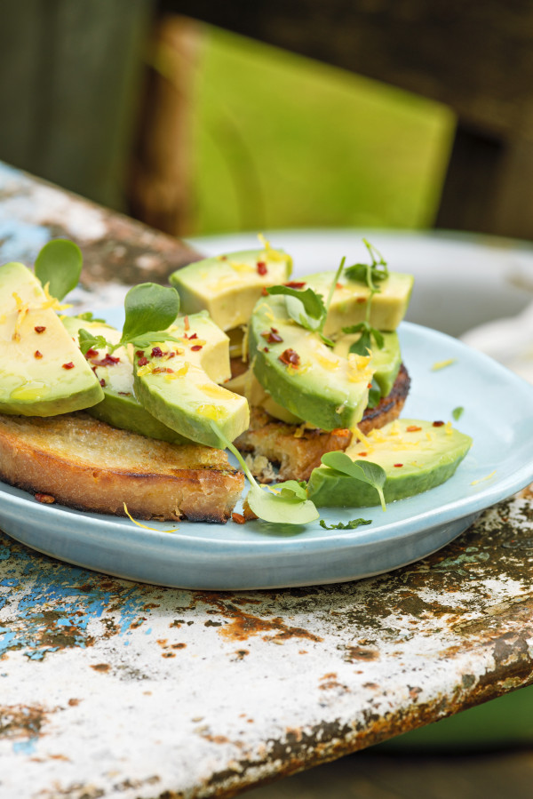

Vegan Avocado Toast Recipe with Lemon and Chile
Cost: $8.00
Time: 10 minutes
Servings: 2-4

Ingredients
2 ripe avocados
2 slices of toasted bread
1 tsp. grated lemon zest juice of 1 lemon
Sea salt and chile flakes for sprinkling
Instructions
1. Divide the avocado in half, remove the pit and carefully remove the skin
2. Slice the avocado into thin boats.
3. Divide the toast on a plate and spread the avocado, salt, chile, lemon zest, lemon juice, and drizzle a little oil over the top.
4. Ready to serve!
Source: http://www.organicauthority.com/avocado-toast-recipe-with-lemon-and-chile/